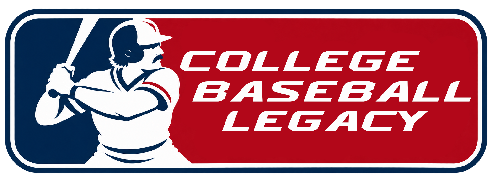

College Baseball Legacy — Dev Log #006
November 3, 2026 | Introducing Our Official Logo!

We're taking a quick break from all the recompilation and debugging to share something a little different!
College Baseball Legacy officially has a logo!
For our logo, we wanted something that represented the history of college baseball while giving CBL its own identity. And honestly, we couldn't think of a more fitting player to feature than Oklahoma State legend Pete Incaviglia.
Why Pete Incaviglia?
If you know college baseball history, you know exactly why.
Incaviglia is widely considered one of the greatest power hitters college baseball has ever seen. During his three seasons at Oklahoma State (1983–1985), he put up some absolutely ridiculous numbers:
- 100 career home runs, an NCAA Division I record that still stands.
- 48 home runs in 1985, another NCAA single-season record.
- 324 career RBIs during his time with the Cowboys.
- 1985 Golden Spikes Award winner, recognizing him as the nation's top amateur baseball player.
He was an absolute monster at the plate and helped establish Oklahoma State as one of college baseball's premier programs during that era.
A Little Orange Power
With our development group being named Orange Power Labs, and our obvious love for Oklahoma State, featuring one of the greatest Cowboys of all time just felt right.
The logo takes inspiration from the classic professional baseball emblem, featuring Incaviglia's batting silhouette alongside the College Baseball Legacy name.
It's a nod to the history of the sport, the foundation we're building upon, and the college baseball experience we hope to create.
We're incredibly excited about how it turned out, and you'll be seeing a lot more of it as development continues!
A new logo, a growing project, and plenty more to come.
#GoPokes
— Orange Power Labs Development Team